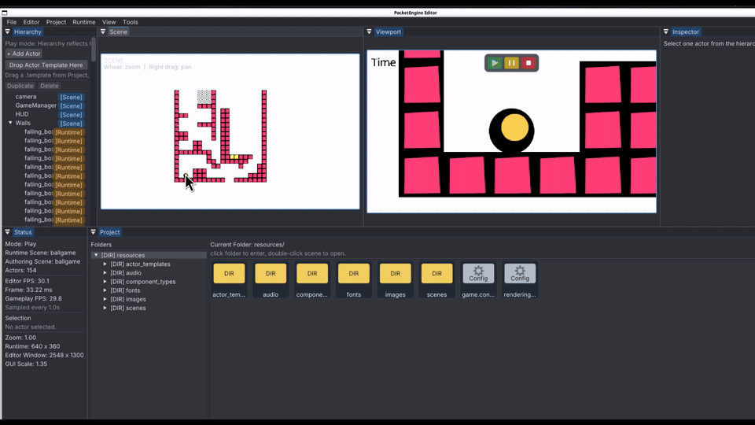

Editor
SceneViewpanel with actor-picking and drag&drop editing;- Viewport for pure runtime output and input routing
- Hierarchy, Inspector, Project, and Status panels
PocketEngine is written in C++17 on top of SDL2, Lua, Box2D, Dear ImGui, and JSON scene assets. The current editor includes a docked Sceneview, embedded runtime Viewport, Project browser, Hierarchy, Inspector and live playmode mutation workflow.
Variant from A2 Engine.

SceneView panel with actor-picking and drag&drop editing;thirdparty/